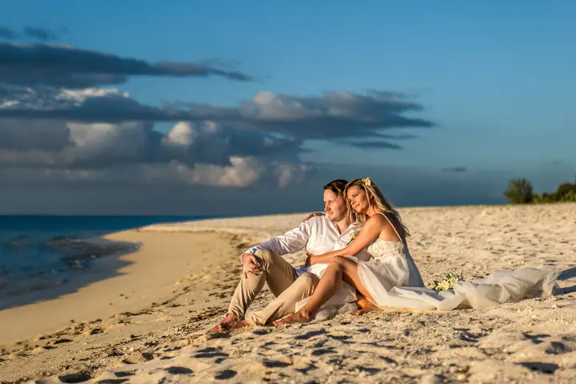
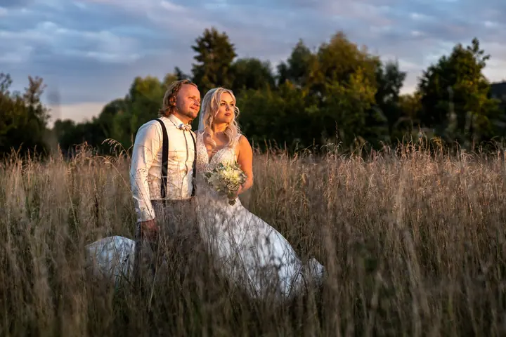

jedna
Svatební fotografie a reportáže
Fotím celý den od ranních příprav přes obřad a skupinové focení až po večerní párty s tanci a ohňostrojem. Vybírat můžete ze tří balíčků nebo vám sestavím svatební balíček na míru.

Svatební a reportážní fotograf · Olomouc, Brno, Praha

Jmenuji se Mirek Bednařík a svatební fotografii se věnuji od roku 2004. Neřídím se trendy, sázím na vlastní styl a dokumentární přístup. Fotím v Olomouci, na jižní Moravě i po celé republice, ale také ve slovinských horách nebo pod palmami na Mauriciu.
Více o mně
Co fotím
jedna
Fotím celý den od ranních příprav přes obřad a skupinové focení až po večerní párty s tanci a ohňostrojem. Vybírat můžete ze tří balíčků nebo vám sestavím svatební balíček na míru.
dvě
Fotím v exteriéru i v ateliéru, jednotlivce i páry. Venku rád využívám historická centra Kutné Hory, Znojma a Kroměříže nebo klidné olomoucké parky.
tři
Dokumentuji firemní akce, večírky, konference i maturitní plesy. Pro školy a školky připravuji moderní skupinové i individuální fotky na tabla.
Fotím prostory a design pro prezentaci na webu. Firmám a stálým klientům nabízím rámcovou smlouvu za zvýhodněných podmínek.
Každý příběh je unikátní.

Za objektivem
Jsem svatební a reportážní fotograf z Olomouce. Svatbám se věnuji od roku 2004 a za tu dobu jsem si vytvořil vlastní, osobitý styl. Věřím, že každý příběh je unikátní a zaslouží si dokumentární přístup, který i po letech vyvolá stejné emoce.
Jižní Morava je mou srdeční záležitostí. Znám nejkrásnější místa mezi vinohrady kolem Hodonína, Bzence, Kyjova nebo Velkých Pavlovic. Rád ale přijedu kamkoli, fotil jsem svatby v Římě, Londýně, na Seychelách, Mauriciu i v Dubaji. Pro svatby ve Slovinsku spolupracuji s týmem Vaše svatba Slovinsko, který za vás zařídí veškeré formality.
Na vašich fotkách mi záleží i po skončení svatby. Upravuji je na Apple iMacu a MacBooku Pro v licencovaných programech a během zpracování je duplicitně zálohuji na profesionálních úložištích LaCie. Na přání vám připravím vybrané snímky v černobílém nebo sépiovém tónování.
Mirek
Dejte mi vědět, kdy a kde se berete, ať už v Olomouci, v Brně, ve vinném sklípku, nebo v zahraničí.
Vyberete si balíček Klasik, Standard nebo Exclusive, případně vám sestavím individuální cenovou nabídku.
Fotím celou reportáž od ranních příprav, obřadu a skupinových fotek po novomanželské portréty, krájení dortu a večerní párty.
Každou fotku pečlivě upravím a pošlu vám ji v plném rozlišení přes zabezpečený odkaz. Součástí balíčku jsou i tištěné fotografie 13×19 cm.
Portfolio
Fotografie jsou ilustrační
Otázky
Balíček Klasik (8 hodin, až 200 fotek, 40 tištěných) stojí 15 000 Kč, Standard (10 hodin, až 300 fotek) 20 000 Kč a Exclusive (12 hodin, 350 a více fotek) 25 000 Kč. Rád vám připravím i balíček na míru.
Ano. Fotím hlavně v Olomouci, Brně, Ostravě a Praze, ale rád přijedu i do Kutné Hory, Znojma, Kroměříže nebo kamkoli na jižní Moravu. Fotím i svatby v zahraničí.
Spolupracuji s profesionály z Vaše svatba Slovinsko. Ti vás provedou celou přípravou a zařídí formality, ať už plánujete velkou svatbu, nebo elopement ve dvou. Já se postarám o fotky.
Na přání vám připravím vybrané snímky v černobílém provedení nebo v sépiovém tónování.
Napište pár vět o tom, co si představujete. · +420 775 130 471